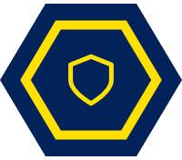

Course SyllabusLearn to defend real networks the way a security analyst does: hunt threats, read logs, and respond to attacks, at your pace.
Intro to Cybersecurity puts you in the seat of a security analyst. Over one semester you'll learn how organizations protect their networks, spot attacks as they happen, and clean up after a breach. Each chapter pairs a plain-language reading with hands-on labs, so you're not just reading about security, you're doing it.
The term is built around three skill areas: Threats & Attacks (who attacks a system, how they get in, and what malware and social engineering look like), Cryptography & Access Control (protecting data, and deciding who gets through the door), Network & Wireless Security (firewalls, segmentation, VPNs, and securing Wi-Fi).. Everything you learn maps to the CompTIA CySA+ (CS0-003) certification, an optional credential covered in its own section below.
This course is fully asynchronous: there are no required live sessions, so you can do the work when it fits your schedule. Announcements and feedback come through email and Google Classroom, and the coursework (lessons, labs, simulations, and quizzes) lives in the MICE LMS. I'll set weekly checkpoints to help you stay on pace.
Each week I host a 30-minute video meetup where you can share projects, connect with classmates, play games, and discuss emerging technologies. It's recommended for connection and community building, but not required.
By the end of the semester you'll think like a defender: able to watch a network, recognize when something is wrong, and take the right action to shut an attack down.
The eight chapters group into three areas. You'll see the same three in the schedule below.
Your grade is your total score across assignments, projects, and quizzes. Each week you'll get a progress report showing two numbers: your overall grade, which reflects only the work you've turned in so far, and your relative grade, which also counts anything not yet submitted as a zero. In other words, what your grade would be if the semester ended today.
Sitting for the certification exam is optional. It isn't a course requirement, it isn't part of your grade, and there's nothing you have to register for, pay for, or schedule. You earn full credit for this course by doing the coursework in MICE LMS, and that's the whole requirement. The quizzes and exams on your schedule belong to this course and do count toward your grade. The certification exam is a separate, outside test, and that one is entirely your call.
If you're curious, you can read what the CompTIA CySA+ exam covers at comptia.org/en-us/certifications/cybersecurity-analyst. And if you're wondering whether it's worth pursuing or whether you're ready, email me at muenchen@miprepschool.org. I'm glad to help you go after it, and just as glad if you'd rather not.
A week-by-week roadmap through the eight chapters, spread across all 18 weeks of the term. Each chapter runs two weeks: the reading and the first two labs in week one, the last lab, the discussion post, and the quiz in week two. The course is self-paced, so treat each row as a target pace to stay on track. School breaks are marked as no-new-lesson weeks, and a ★ marks a major milestone.
| Week | Dates | Chapter, labs & assessments |
|---|---|---|
| Unit 1 · Threats & Attacks | ||
| 1 | Aug 25–28 | Ch 1 · Security Fundamentals & the CIA Triad, part 1. Course orientation, then the Chapter 1 reading. Labs 1.1 Identifying CIA Triad Violations and 1.2 Security Terminology Mapping. |
| 2 | Aug 31–Sep 3 | Ch 1 · Security Fundamentals & the CIA Triad, part 2. Lab 1.3 Real-World Breach Case Analysis. Discussion post midweek, Ch 1 quiz Friday. |
| Labor Day Break · Sep 4–7 · no new lessons | ||
| 3 | Sep 8–11 | Ch 2 · Threat Actors, Attack Vectors & Attack Surface, part 1. Chapter 2 reading. Labs 2.1 Threat Actor Profile Cards and 2.2 Attack Vector Identification. |
| 4 | Sep 14–18 | Ch 2 · Threat Actors, Attack Vectors & Attack Surface, part 2. Lab 2.3 Attack Surface Mapping on a Sample Network. Discussion post midweek, Ch 2 quiz Friday. |
| 5 | Sep 21–25 | Ch 3 · Malware & Social Engineering, part 1. Chapter 3 reading. Labs 3.1 Malware Sample Classification and 3.2 Phishing Email Analysis. |
| 6 | Sep 28–Oct 2 | Ch 3 · Malware & Social Engineering, part 2. Lab 3.3 Social Engineering Scenario Role-Play. Discussion post midweek, Ch 3 quiz Friday. |
| 7 | Oct 5–9 | Ch 4 · Network-Based Attacks, part 1. Chapter 4 reading. Labs 4.1 Simulated DoS Traffic Analysis and 4.2 Man-in-the-Middle Scenario Walkthrough. |
| 8 | Oct 12–16 | Ch 4 · Network-Based Attacks, part 2. Lab 4.3 Wireshark Packet Capture Basics. Discussion post midweek, Ch 4 quiz Friday. |
| Unit 2 · Cryptography & Access Control | ||
| 9 | Oct 19–23 | Ch 5 · Cryptography, part 1. Chapter 5 reading. Labs 5.1 Symmetric vs. Asymmetric Encryption Comparison and 5.2 Hashing Files and Verifying Integrity. |
| 10 | Oct 26–30 | Ch 5 · Cryptography, part 2. Lab 5.3 PKI Certificate Inspection, then a review of encryption versus hashing. Discussion post midweek, Ch 5 quiz Friday. |
| 11 | Nov 2–6 | Ch 6 · Authentication & Access Control, part 1. Chapter 6 reading. Labs 6.1 Multi-Factor Authentication Setup Simulation and 6.2 Access Control Model Comparison (MAC, DAC, RBAC). |
| 12 | Nov 9–13 | Ch 6 · Authentication & Access Control, part 2. Lab 6.3 Password Policy Configuration. Discussion post midweek, Ch 6 quiz Friday. |
| Unit 3 · Network & Wireless Security | ||
| 13 | Nov 16–20 | Ch 7 · Network Security Architecture, part 1. Chapter 7 reading. Labs 7.1 Firewall Rule Configuration Simulation and 7.2 DMZ and Network Segmentation Diagramming. |
| Thanksgiving Break · Nov 23–27 · no new lessons | ||
| 14 | Nov 30–Dec 4 | Ch 7 · Network Security Architecture, part 2. Lab 7.3 VPN Tunnel Setup Walkthrough. Discussion post midweek, Ch 7 quiz Friday. |
| 15 | Dec 7–11 | Ch 8 · Wireless Security, part 1. Chapter 8 reading. Labs 8.1 Wireless Protocol Comparison (WEP, WPA, WPA2, WPA3) and 8.2 Rogue Access Point Detection. |
| 16 | Dec 14–18 | Ch 8 · Wireless Security, part 2. Lab 8.3 Wireless Security Audit Checklist. Discussion post midweek, Ch 8 quiz Friday. The review packet goes out Friday. |
| Winter Break · Dec 21 – Jan 1 · no new lessons | ||
| Review & Exam | ||
| 17 | Jan 4–8 | ★ Course Review. No new chapter. Work back through Ch 1–8 by theme: threats and attacks, network attacks and cryptography, access control and architecture, and wireless. The review assignment is due Friday. |
| 18 | Jan 11–15 | ★ Course Exam. Open Q&A on the topics you found hardest, then the exam Friday, covering Ch 1–8. |
Weekly targets keep your progress steady, but you're welcome to work ahead. If you fall behind, reach out early and we can build a plan to help you catch up before the semester ends.
Because this course is fully asynchronous, there is no penalty for late work. The weekly schedule is a pacing guide to help you stay on track over the semester, not a set of hard deadlines. Staying close to the pace keeps the workload manageable and makes sure you finish every project before the term ends.
Email me anytime at muenchen@miprepschool.org or send me a Google chat. I typically respond within one school day.
The goal is for you to learn to think like a security analyst, and to use every skill you gain responsibly.
AI tools can be great tutors, and security professionals use them every day to speed up analysis. But you are at the beginning of your cybersecurity education. If AI does all the thinking for you, the learning never happens. On an exam and on the job, you'll be on your own.
This course also teaches real offensive and defensive techniques. That knowledge comes with responsibility.